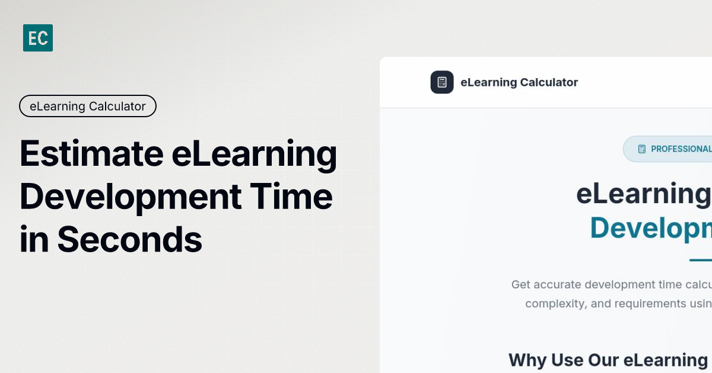
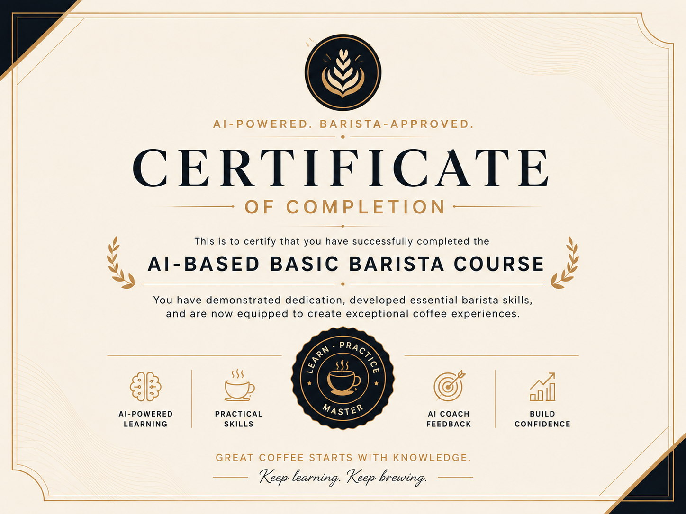
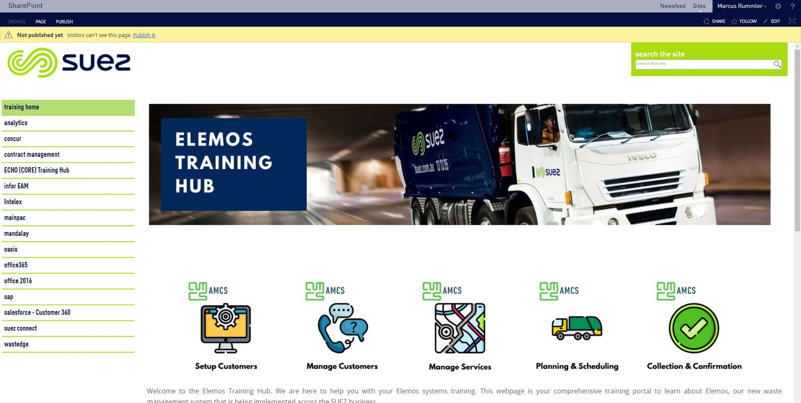
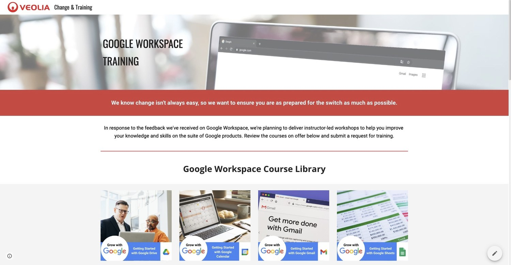
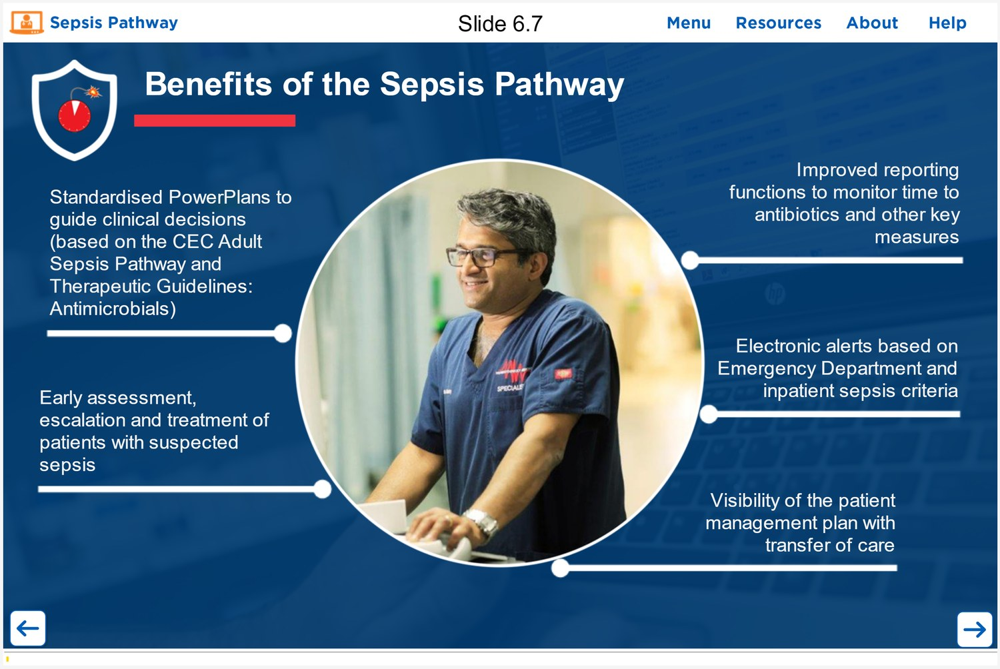
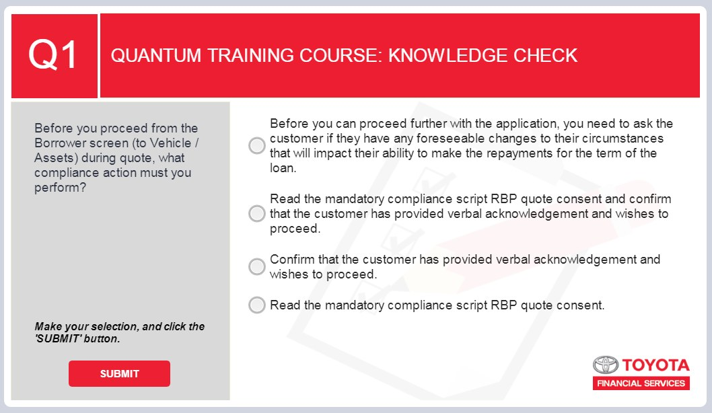
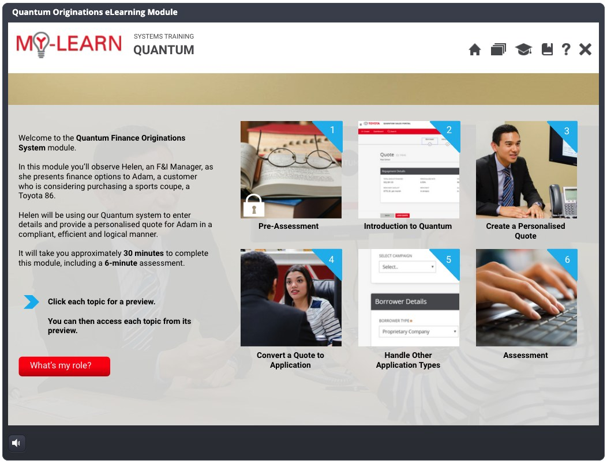
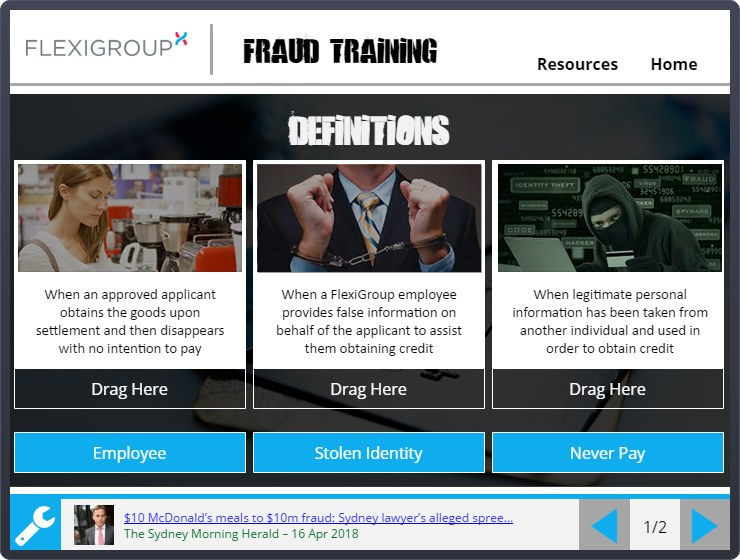
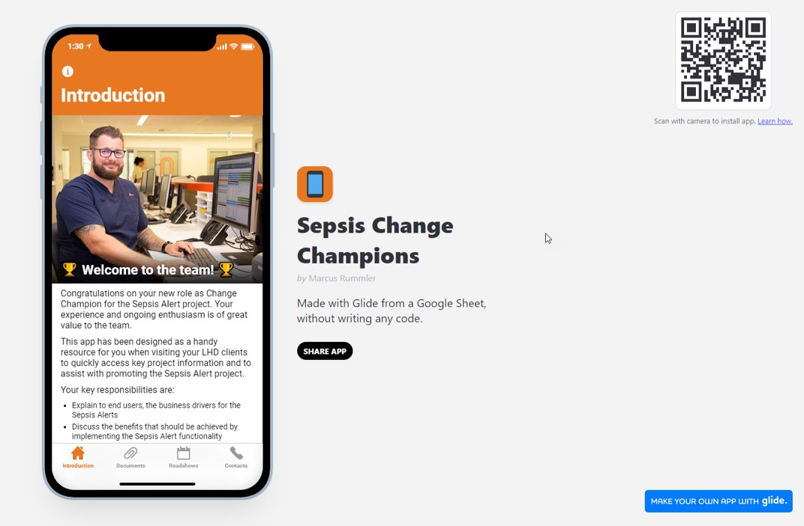
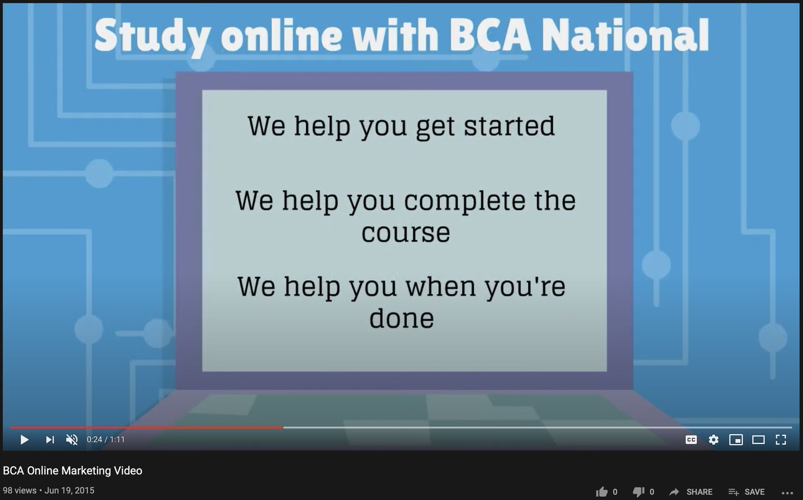

For recruiters
You can quickly see my current CV, enterprise clients, systems experience, tools, certifications, and examples of hands-on delivery.
Senior instructional designer / learning technology builder
I design learning that helps people adopt complex systems with confidence.
My work sits where systems, process, people, and go-live pressure overlap: implementation training, digital learning, job aids, and practical AI-assisted tools for L&D teams.
Professional snapshot
I am a Senior Instructional Designer with 10+ years designing end-to-end learning for ERP, SaaS, insurance, health, utilities, property, finance, and operations environments.
You can quickly see my current CV, enterprise clients, systems experience, tools, certifications, and examples of hands-on delivery.
I show how I structure training, support adoption, build learning portals, create eLearning, and design practical tools.
Selected work
I have grouped the work by what it proves. The strongest current samples sit up front, while older client work is included where it shows useful range and delivery experience.

AI-assisted product / L&D scoping tool
I built this live estimation tool for instructional designers and L&D teams who need fast, defensible development-time estimates. It turns common scoping factors into a practical planning conversation: content readiness, interactivity, media requirements, review cycles, and SME availability.
Interactive eLearning / SCORM 1.2
I created this six-lesson interactive course to demonstrate course structure, visual learning, knowledge checks, progress tracking, SCORM packaging, and AI-assisted asset workflows. It teaches coffee origins, espresso fundamentals, milk steaming, grinder setup, hygiene, and drink recipes.

Implementation training
My recent work spans IFS Cloud, Duck Creek, i90, Yardi Voyager, Oracle HCM Cloud, Google Workspace, Salesforce-integrated platforms, and clinical systems. The pattern is consistent: I translate changing processes, imperfect builds, and SME knowledge into usable training before go-live.
Future-focused L&D
I use Claude, Copilot, and custom tooling to accelerate analysis, drafting, prototyping, image workflows, and reusable L&D products. The instructional strategy, quality control, and final decisions stay human-led.
Legacy samples by capability
Some screenshots reflect older tools and brand systems. I have kept them because they still show: portals and adoption hubs, Storyline interaction design, and performance-support/change communication.
Learning portals and adoption hubs
SharePoint, Google Sites, course libraries, launch resources, webinar access, and adoption support.


Articulate Storyline interaction design
Branching content, drag-and-drop tasks, knowledge checks, answer-specific feedback, and visual signalling.




Performance support and change communication
Mobile app concepts, QR-accessed resources, animated explainer videos, and change communications.


Learning practice
I keep words, visuals, signalling, sequencing, and redundancy under control so learners spend effort on the task rather than decoding the screen.
I use attention, objectives, prior knowledge, guided practice, feedback, assessment, and transfer as a practical design checklist.
I design for working memory: smaller decisions, clear examples, progressive complexity, and fewer decorative distractions.
I start with what people need to do on the job, then choose the lightest useful format: course, guide, checklist, simulation, or coached practice.
Resume profile
Recent projects include IFS Cloud, Duck Creek, i90, Yardi Voyager, Oracle HCM Cloud, Google Workspace, Salesforce-integrated platforms, and clinical/regulated environments.
I design QRGs, system walkthroughs, classroom materials, training needs analysis, learning paths, go-live readiness assets, and hypercare support.
I build with Articulate Storyline 360, Rise, Camtasia, Captivate, SharePoint, Google Sites, responsive web learning, and SCORM packaging.
I use Claude, Copilot, custom calculators, prototype tools, content acceleration workflows, and practical AI support for L&D teams.
Sydney Water, Hollard Insurance, Mirvac, Downer, IAG, Veolia, SUEZ, eHealth NSW, Toyota Finance, FlexiGroup, and Westpac.
Contact and source files
I have included my current CV and original portfolio deck for context. The web version is the cleaner, more current view of what I do and how I think about learning design.